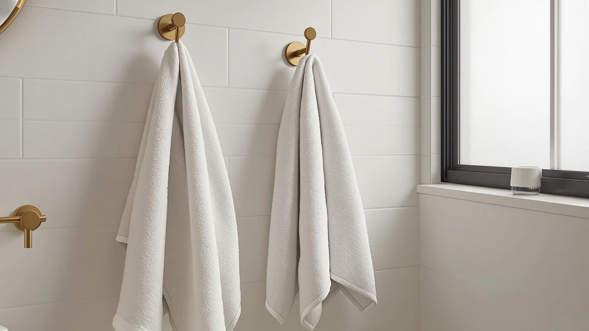

Best How to Install Bathroom Towel Hooks (2026) | Best Bath Towels


Things to Know Before You Buy
- Height matters more than style. Mount bathroom towel hooks 65 to 70 inches off the floor for adults, or around 48 inches for kids, so towels clear the floor and stay within reach.
- The included anchors fail first. Most hooks ship with thin plastic cone anchors. Swap them for self-drilling metal drywall anchors rated for 25 pounds or more.
- A wet bath towel weighs 2 to 4 pounds. That constant pull loosens weak mounts within weeks, so the anchor you choose matters more than the hook itself.
- Spacing keeps towels drying. Leave at least 9 inches between hooks so hanging towels do not overlap and trap moisture against each other.
- Tile changes the tools. Drilling into tile calls for a carbide or diamond bit and a strip of tape. The steps below cover drywall, with tile notes in the FAQ.
Once you know how to install bathroom towel hooks, you can add hanging space to a crowded bathroom in about 30 minutes with a drill and a handful of anchors. A single hook occupies about four inches of wall, so three hooks fit in the footprint of a single towel bar, and each person in the house gets a spot that stays theirs.
This guide walks you through the five steps we follow when we mount towel hooks in drywall: choosing the height, checking for studs, drilling pilot holes, setting anchors, and load-testing the finished row. One caveat before you start: a towel bunched on a hook dries slower than a towel spread on a bar, so plan one hook per towel instead of stacking two or three on the same peg.
What You'll Need
- Supplies: towel hooks with mounting screws, self-drilling drywall anchors rated for 25 pounds, painter's tape, a pencil
- Tools: cordless drill with a 1/8-inch bit, stud finder, torpedo level, Phillips screwdriver
Step 1: Choose the height and mark each hook location
Start by deciding where your bathroom towel hooks will earn their keep. The wall behind the door and the strip beside the shower both work well. So does the space above a low cabinet. You want the towel within arm's reach of the tub or shower without brushing the vanity or the light switches. Hold a folded bath towel against the wall and check that it hangs clear of the door swing before you commit to a spot.
Mark each hook position with a pencil at 65 to 70 inches off the floor. That height keeps a standard bath towel off the baseboard and puts the hook at shoulder level for most adults. Drop to about 48 inches if kids will use the hooks, since a hook they cannot reach guarantees towels on the floor. For a row of hooks, measure at least 9 inches between marks so wet towels hang without touching.
Run a strip of painter's tape along the wall at your chosen height before you measure the spacing. You can draw on the tape instead of the paint, and the straight edge doubles as a level reference across the whole row.
Step 2: Check the wall for studs
Slide a stud finder across the wall at your marked height and note where it signals. A towel hook screwed directly into a wood stud holds more weight than any drywall anchor, so shift a mark an inch or two sideways if that small move lands it on a stud. Studs sit 16 inches apart in most US homes, which means a row of three hooks usually catches one stud at best.
No stud finder on hand? Knock along the wall with a knuckle. A dull thud means wood behind the drywall, and a hollow ring means an empty cavity. Confirm your read by driving a finishing nail into an inconspicuous spot, since stud finders misread walls that hide pipes or metal corner bead.
Write "stud" or "anchor" next to each mark on the painter's tape. Each anchor spot gets one of the 25-pound self-drilling anchors from your supply list, and the stud spots need nothing beyond the screw that came with the hook.
Step 3: Drill the pilot holes
Chuck a 1/8-inch bit into your drill and bore a pilot hole at each pencil mark. Keep the drill square to the wall, because an angled hole tilts the towel hook and the towel slides off the tip for as long as the hook hangs there. Drywall offers little resistance, so let the bit do the work and stop as soon as it breaks through, about half an inch in.
At the stud locations, the pilot hole keeps the mounting screw from splitting the wood and helps you drive it straight. At the anchor locations, check your anchor packaging first: self-drilling anchors screw into bare drywall with no pilot hole at all, while tap-in styles need a hole matched to the anchor diameter printed on the pack.
Vacuum the gypsum dust off the baseboard as you go. Dust ground into caulk lines takes longer to clean up than the rest of the towel hook install combined.
Step 4: Set the anchors and mount the hooks
Drive a self-drilling anchor into each drywall-only location with a Phillips screwdriver until the flange sits flush with the wall. Stop turning the moment it seats. An over-driven anchor spins in the gypsum and loses most of its holding power, and at that point the repair means a larger anchor and a patch job.
Position each towel hook over its hole and drive the mounting screws until the base pulls snug against the wall. Finish the last quarter turn by hand with a screwdriver rather than the drill, because drill torque strips a drywall anchor in one quick pulse. Hooks with a concealed mounting plate work in reverse order: screw the plate to the wall first, slide the hook body over it, then lock the small set screw underneath with the hex key from the package.
Check each hook against your tape line before that final tightening. A row of bathroom towel hooks reads as one visual unit, and a single hook sitting a quarter inch low will catch your eye from the doorway within a day.
Step 5: Load-test and tighten each hook
Peel off the painter's tape and put each towel hook through a real test. Hang a soaked bath towel on it, then pull down with an extra 10 to 15 pounds of hand pressure. A properly anchored hook takes that load without a wiggle. Movement at the base means a loose screw, while movement inside the wall means the anchor failed and needs the next size up before you trust it with daily use.
Retighten anything that shifted, then repeat the pull test. Come back for one more check after a week of use, since fresh anchors settle slightly as the drywall compresses around them. One follow-up turn of each screw at that point locks most towel hook installs in place for years.
Common Mistakes to Avoid
The plastic cone anchors packaged with most hooks cause most failed installs. They grip drywall with a few shallow ribs, and the downward tug of a wet towel works them loose within a month or two. Spend a few dollars on self-drilling metal anchors and the same bathroom towel hooks will hold for a decade.
Crowding comes second. Hooks spaced 4 or 5 inches apart look tidy on the wall and perform badly in use, because the towels overlap and stay damp into the next morning. Damp cotton in a closed bathroom also picks up a mildew smell that takes several hot washes to remove. Nine inches between hooks is the working minimum, and twelve is better if the wall allows it.
Skipping the level line ranks third. Eyeballing one hook works fine, but eyeballing a row of three does not, and re-drilling to fix a crooked hook leaves a visible hole an inch from the new one. Painter's tape and a cheap torpedo level prevent the problem in under a minute.
The last mistake is torque. A drill drives screws faster than drywall can resist, and one extra second on the trigger strips the anchor. Seat the screws with the drill, then finish the final quarter turn by hand. Your wrist can feel the anchor bite in a way the drill cannot.
Our Top Picks
Hooks change which towels work best. A dense, heavy towel bunched on a single point can stay damp overnight, while lighter and more open weaves shed water even when folded over themselves. These three sets from our towel guides are the ones we would hang on a fresh row of hooks.

Editor's Pick
HOMEXCEL Waffle Bath Towels Set
The open waffle weave lets air move through the fabric even when the towel hangs bunched on a hook, so it dries faster than a terry towel of similar weight. That makes it our first choice for hook storage.
$29.99
Check Price on Amazon
Best Value
REDKISS Large Bath Towels Set
Oversized towels hold more water, so each one deserves a peg of its own. This set gives you generous coverage after a shower, and one towel per hook keeps the extra fabric drying instead of souring.
$39.99
Check Price on Amazon
Premium Choice
REDKISS 6-Piece Bath Towel Set
A six-piece set outfits a family bathroom in one order, which suits a row of hooks where each person claims a peg. The mid-weight cotton feels plush without taking all day to dry on a hook.
$28.59
Check Price on AmazonFrequently Asked Questions
What is the right height for bathroom towel hooks?
Mount bathroom towel hooks 65 to 70 inches from the floor for adults, which puts the hook at shoulder height and keeps a standard bath towel well clear of the baseboard. For a kids bathroom, drop to about 48 inches so children can reach their own towels. Above a counter or toilet tank, confirm the hanging towel clears the surface by a few inches before you drill.
Can you install towel hooks without drilling?
Yes. Adhesive hooks rated for 5 pounds or more hold a single bath towel on smooth tile, glass, or painted drywall, and renters rely on them for that reason. Clean the surface with rubbing alcohol first and wait the full cure time, usually 24 hours, before hanging anything. Expect a shorter service life than a screwed-in hook, since bathroom steam softens most adhesives over time.
How much weight does a towel hook need to hold?
A wet bath towel weighs 2 to 4 pounds, but yanking a towel off the hook adds momentary force well beyond that. Anchor each towel hook for at least 25 pounds. A hook screwed into a wood stud clears that bar easily, and in hollow drywall, self-drilling metal anchors or toggle bolts reach the target while the thin plastic anchors in most packages do not.
How far apart should towel hooks be spaced?
Leave a minimum of 9 inches between hooks, and stretch to 12 inches if the wall allows. Towels spaced closer than that overlap as they hang and trap moisture between the layers. Expect a musty smell within a week of daily use.
Can you install bathroom towel hooks on tile?
Yes, with two changes to the drywall method. Use a carbide or diamond drill bit, and stick painter's tape over the mark so the bit does not wander on the glazed surface. Drill slowly with light pressure until you pass through the tile, then switch to a standard bit for the wall behind it. Push the anchor deep enough that it expands in the wall cavity rather than inside the tile, which can crack it.
Verdict
Anyone with a drill can learn how to install bathroom towel hooks, and the whole job runs about 30 minutes from first pencil mark to load test. The sequence stays the same on any drywall: mark the height at 65 to 70 inches, check for studs, drill straight pilot holes, seat metal anchors where you missed the studs, and pull hard on each hook before you call it done. The anchors decide whether the install lasts a decade or a month, so discard the plastic cones in the package and spend a few dollars on self-drilling anchors rated for 25 pounds.
Once the hooks sit tight, hang towels that suit them. The HOMEXCEL waffle set remains our first pick for hook drying, because the open weave sheds moisture even when the towel hangs folded on itself. Give each towel its own hook, retighten the screws after the first week, and the hardware will outlast the towels several times over.